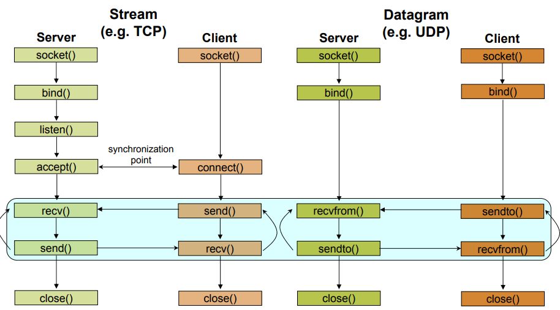

Práctica 1 (Parte 1). Programación con sockets en C
Objetivos
- Familiarizarse con la API de sockets en C.
- Desarrollar esquemas básicos de sistemas cliente/servidor TCP y UDP utilizando C.
- Ser capaces de analizar el tráfico generado en una conexión TCP y UDP a través de Wireshark.
- Diseñar un protocolo de capa de aplicación para simular una aplicación cliente/servidor utilizando TCP y UDP para interactuar entre un cliente y un servidor bajo un sistema operativo Linux.
Introducción
La historia de los sockets se remonta al origen de ARPANET, en 1971, y su posterior estandarización en forma de API dentro del sistema operativo Berkeley Software Distribution (BSD), liberado en 1983, bajo el nombre de sockets de Berkeley.
Con la popularización de Internet en los años 90, y de la mano de la World Wide Web, la programación de red sufrió también una notable evolución. Los servidores web y los navegadores no fueron (ni son) las únicas aplicaciones basadas en sockets. De hecho, los sistemas cliente/servidor son a día de hoy ubicuos e incluyen, por supuesto, a todos los protocolos de alto nivel que dan soporte a Internet de las Cosas. De hecho, a día de hoy, aunque los potocolos de alto nivel (capa de aplicación) han evolucionado hasta niveles de sofisticación no considerados en sus inicios, la API de bajo nivel sobre la que se basan se mantiene inalterada.
El tipo más común de aplicaciones basadas en sockets se basa en el paradigma cliente/servidor, donde una de las partes actúa como servidor, esperando pasivamente conexiones desde un conjunto de uno o más clientes. A continuación, veremos cómo desarrollar este tipo de paradigma desde Python, utilizando sockets Berkeley. Existen también los llamados Unix domain sockets, que permiten la comunicación directa entre procesos en el mismo host, aunque quedan fuera de nuestro interés en el ámbito de IoT.
En la práctica anterior, vimos cómo desarrollar sistemas cliente/servidor sencillos utilizando Python, tanto en sus variantes TCP como UDP. El objetivo de la presente práctica es estudiar y desarrollar componentes de red (clientes y servidores TCP y UDP) que puedan ejecutarse sobre el ESP32 haciendo uso de las facilidades propuestas por ESP-IDF. Además, demostraremos que es posible hacer interactuar clientes y servidores ejecutándose indistintamente en la máquina virtual (programados vía Python) y en la propia placa (utilizando la API de sockets de C).
La API de sockets en C
Funciones para ordenacion de bytes
Como TCP/IP es un estándar universal, y permite comunicaciones entre cualquier
plataforma y arquitectura, es necesario disponer de un método de ordenación
de los bytes para que máquinas big-endian y little-endian puedan comunicarse
de forma transparente y correcta. Para ello, se suelen proporcionar rutinas
de reordenación de bytes. En plataformas donde los datos ya están correctamente
ordenados, estas funciones no tienen ninguna funcionalidad especial, pero en
cualquier caso, es necesario utilizarlas siempre para que la comunicación
entre pares sea correcta. Las funciones típicas de reordenación de datos
son cuatro: htons, htonl, ntohs y ntohl. Su nombre explica correctamente
su semántica: host to network (short)
host to network (long), network to host (short) y network to host (long),
convirtiendo tipos de datos short y long desde el formato utilizado en
transmisiones de red (network) a representación en el host. Así, siempre
que enviemos un dato binario por la red, deberá ser transformado utilizando
hton* y cuando lo recibamos y debamos procesarlo, utilizando ntoh*.
Estructuras de datos
Antes de estudiar la API de sockets básica, es necesario mostrar el cometido
de un conjunto de estructuras de datos utilizadas comúnmente en todas ellas. La
más importante es sockaddr_in, que se define como sigue:
struct sockaddr_in
{
short sin_family;
u_short sin_port;
struct in_addr sin_addr;
char sin_zero[8];
};
La estructura in_addr utilizada en sockaddr_in se define como:
struct in_addr
{
u_long s_addr;
};
Ésta consiste en un campo de tipo unsigned long int que contiene la
dirección IP que se asociará con el socket.
La estructura sockaddr_in contiene dos campos importantes:
sin_family: que indica al socket qué familia de protocolos se utilizarán (usaremos la constanteAF_INETpara IPv4).sin_port: que indica el puerto asociado al socket.
API básica
socket()
- Prototipo:
int socket(int family, int type, int protocol);
-
Descripción: Crea un endpoint de comunicación y devuelve un descriptor de fichero para manejarlo.
-
Parámetros:
family:AF_INET(IPv4),AF_INET6(IPv6).type:SOCK_DGRAM(UDP),SOCK_STREAM(TCP),SOCK_RAW.protocol: Típicamente 0 (no usado en sockets de Internet).
-
Valor de retorno: Si tiene éxito, devuelve el descriptor de socket. Devuelve
-1si se produce un error. -
Detalles: consultad la página de manual de
socket(man socket).
bind()
- Prototipo:
int bind(int sockfd, const struct sockaddr *addr, socklen_t addrlen);
-
Descripción: Asocia un socket a una dirección especificada por
addr. Normalmente, es necesario asignar una dirección local vía esta función antes de que un socket TCP pueda recibir conexiones. -
Parámetros:
sockfd: descriptor de socket (devuelto porsocket).addr: dirección a asociar (véase estructura en sección anterior).addrlen: longitud (en bytes) de la anterior estructura.
-
Valor de retorno: Si tiene éxito, devuelve 0. Devuelve
-1si se produce un error. -
Detalles: consultad la página de manual de
bind(man bind).
listen()
- Prototipo:
int listen(int sockfd, int backlog);
-
Descripción: Marca el socket proporcionado como pasivo, esto es, un socket que podrá ser utilizado para aceptar conexiones entrantes usando la llamada
accept. -
Parámetros:
sockfd: descriptor de socket (devuelto porsocket).backlog: longitud máxima que podrá tener la cola de conexiones pendientes para el socket. Si se sobrepasa, el cliente recibirá un error en su intento de conexión.
-
Valor de retorno: Si tiene éxito, devuelve 0. Devuelve
-1si se produce un error. -
Detalles: consultad la página de manual de
listen(man listen).
accept()
- Prototipo:
int accept(int sockfd, struct sockaddr *addr, socklen_t *addrlen);
-
Descripción: En sockets orientados a conexión, extrae la primera solicitud de conexión de la cola de conexiones pendientes para el socket proporcionado, crea un nuevo socket conectado y devuelve su descriptor.
-
Parámetros:
sockfd: descriptor de socket (devuelto porsocket).addr: es un puntero a una estructura de tiposockaddr, cuyos campos serán rellenados con los datos de dirección del socket remoto.addrlen: tamaño de la estructuraaddr.
-
Valor de retorno: Si tiene éxito, devuelve el descriptor de socket. Devuelve
-1si se produce un error. -
Detalles: consultad la página de manual de
accept(man accept).
connect()
- Prototipo:
int connect(int sockfd, const struct sockaddr *addr, socklen_t addrlen);
-
Descripción: Conecta el socket proporcionada a la dirección especificada por
addr. Si el socket es UDP,addrserá la dirección a la que se enviarán los datagramas por defecto, y la única desde la que se recibirán datagramas. En caso de TCP, esta llamada inicia el proceso de conexión a la dirección especificada. -
Parámetros:
sockfd: descriptor de socket (devuelto porsocket).addr: es un puntero a una estructura de tiposockaddr, cuyos campos indican la dirección de conexión destino.addrlen: tamaño de la estructuraaddr.
-
Valor de retorno: Si tiene éxito, devuelve el descriptor de socket. Devuelve
-1si se produce un error. -
Detalles: consultad la página de manual de
connect(man connect).
send()
- Prototipo:
ssize_t send(int sockfd, const void *buf, size_t len, int flags);
-
Descripción: En un socket en estado conectado (con receptor conocido) transmite mensajes a un socket remoto.
-
Parámetros:
sockfd: descriptor de socket de envío.buf: buffer de envío donde se almacena el mensaje a enviar.len: número de bytes a enviar.
-
Valor de retorno: Si tiene éxito, devuelve el número de bytes enviados. Devuelve
-1si se produce un error. -
Detalles: consultad la página de manual de
send(man send).
recv()/recvfrom()
- Prototipos:
ssize_t recv(int sockfd, void *buf, size_t len, int flags);
ssize_t recvfrom(int sockfd, void *buf, size_t len, int flags,
struct sockaddr *src_addr, socklen_t *addrlen);
-
Descripción: Reciben mensajes desde un socket, tanto en sockets orientados como no orientados a conexión.
recvfrom, a diferencia derecv, recibe parámetros de salida adicionales que almacenan información sobre la dirección origen del mensaje. -
Parámetros:
sockfd: descriptor de socket de recepción.buf: buffer de recepción donde se almacena el mensaje a recibir.len: número de bytes a recibir.src_addr: dirección del extremo remoto del socket (origen de la comunicación).addrlen: tamaño de la estructurasrc_addr.
-
Valor de retorno: Si tiene éxito, devuelve el número de bytes recibidos. Devuelve
-1si se produce un error. -
Detalles: consultad las páginas de manual de
recvyrecv_from(man recvyman recv_from).
close()
- Prototipo:
int close(int fd);
-
Descripción: Cierra un socket.
-
Parámetros:
fd: descriptor de socket.
-
Detalles: consultad la página de manual de
close(man close).
Ejemplos
Se proporcionan a continuación ejemplos completos de uso de la API de sockets en C para el desarrollo de sistemas cliente/servidor sencillos. Para cada uno de ellos, comprueba que, efectivamente, el uso y secuencia de aplicación de cada llamada sigue las directivas de la figura:

Tarea 1.1
Compila (utilizando la oren gcc ejemplo.c -o ejemplo.x desde
una terminal) y a continuación ejecuta (./ejemplo.x) cada par
de códigos y comprueba su funcionamiento. Estudia con detenimiento el uso
de cada rutina y como efectivamente siguen las directivas marcadas
anteriormente. Si no tienes experiencia en desarrollo en C, consulta las
páginas de manual correspondientes, o con tu profesor, para resolver todas
tus dudas. Asegúrate de entender el proceso de compilación, enlazado y
ejecución de un binario.
Ejemplo: un cliente TCP
#include <arpa/inet.h>
#include <stdio.h>
#include <string.h>
#include <sys/socket.h>
#include <unistd.h>
#include <netinet/in.h>
int main() {
const int server_port = 9000;
struct sockaddr_in server_address;
memset(&server_address, 0, sizeof(server_address));
server_address.sin_family = AF_INET;
server_address.sin_addr.s_addr = inet_addr("127.0.0.1");
server_address.sin_port = htons(server_port);
int sock;
if ((sock = socket(PF_INET, SOCK_STREAM, 0)) < 0) {
printf("Error en socket\n");
return 1;
}
if (connect(sock, (struct sockaddr*)&server_address,
sizeof(server_address)) < 0) {
printf("Error en connect\n");
return 1;
}
const char* data_to_send = "Hola, RPI!!";
send(sock, data_to_send, strlen(data_to_send), 0);
int n = 0;
int len = 0, maxlen = 100;
char buffer[maxlen];
char* pbuffer = buffer;
if ((n = recv(sock, pbuffer, maxlen, 0)) > 0) {
pbuffer += n;
maxlen -= n;
len += n;
buffer[len] = '\0';
printf("Recibido: '%s'\n", buffer);
}
close(sock);
return 0;
}
Ejemplo: un servidor TCP
#include <arpa/inet.h>
#include <netinet/in.h>
#include <stdbool.h>
#include <stdio.h>
#include <string.h>
#include <unistd.h>
int main(int argc, char *argv[]) {
int SERVER_PORT = 9000;
struct sockaddr_in server_address;
memset(&server_address, 0, sizeof(server_address));
server_address.sin_family = AF_INET;
server_address.sin_port = htons(SERVER_PORT);
server_address.sin_addr.s_addr = htonl(INADDR_ANY);
int listen_sock;
if ((listen_sock = socket(PF_INET, SOCK_STREAM, 0)) < 0) {
printf("Error en socket\n");
return 1;
}
if ((bind(listen_sock, (struct sockaddr *)&server_address,
sizeof(server_address))) < 0) {
printf("Error en bind\n");
return 1;
}
int wait_size = 16;
if (listen(listen_sock, wait_size) < 0) {
printf("Error en listen\n");
return 1;
}
struct sockaddr_in client_address;
int client_address_len = 0;
while (true) {
int sock;
if ((sock =
accept(listen_sock, (struct sockaddr *)&client_address,
&client_address_len)) < 0) {
printf("Error en accept\n");
return 1;
}
int n = 0;
int len = 0, maxlen = 100;
char buffer[maxlen];
char *pbuffer = buffer;
printf("Cliente conectado con IP: %s\n",
inet_ntoa(client_address.sin_addr));
while ((n = recv(sock, pbuffer, maxlen, 0)) > 0) {
pbuffer += n;
maxlen -= n;
len += n;
printf("Recibido: '%s'\n", buffer);
send(sock, buffer, len, 0);
}
close(sock);
}
close(listen_sock);
return 0;
}
Tarea 1.2
Reproduce el funcionamiento del anterior sistema cliente/servidor echo utilizando UDP.
Capturas de tráfico vía Wireshark
Wireshark es una herramienta de código abierto ampliamente utilizada para analizar protocolos de comunicación de red en cualquiera de las capas de la pila TCP/IP (como también en otros protocolos). Wireshark implementa un amplio abanico de filtros para definir criterios de búsqueda en las capturas de tráfico, aunque de momento, en nuestro caso, no será necesario utilizar filtros específicos.
Para arrancar Wireshark en la máquina virtual proporcionada (o en cualquier instalación básica Linux), teclea en tu terminal:
$ sudo wireshark
Tras el arranque, podemos comenzar una nueva captura de tráfico a través
del menú Capture, opción Start. La pantalla de selección de interfaz
nos permitirá definir en qué interfaz de red se realizará la captura. En
nuestro caso, ya que vamos a comunicar dos procesos en la misma máquina,
elegiremos la interfaz de Loopback (lo) y comenzaremos la captura.
Tarea 1.3
Arranca Wireshark y prepara una captura sobre la interfaz de loopback de tu máquina. Ejecuta el servidor echo TCP y el cliente correspondiente, y analiza el tráfico generado. Especialmente, fíjate en el proceso de establecimiento de conexión en tres vías, paquetes de Acknowledge tras el envío de cada mensaje y, en general, en cualquier otro aspecto que consideres de interés.
Construcción de mensajes
Para enviar mensajes que encapsulen distintos tipos de datos en una sola invocación, puedes definir un mensaje como el siguiente:
typedef struct {
int x;
int y;
} mensaje;
Dando valor a cada campo y a continuación enviándolo proporcionando la dirección de inicio de la estructura, del siguiente modo:
mensaje.x = x; mensaje.y = y;
send( socketfd, &mensaje, sizeof( mensaje ), 0 );
Tarea 1.4
Se pide diseñar un sistema cliente/servidor programado en C, que simule el envío de un conjunto de datos sensorizados desde un cliente hacia un servidor. El protocolo a utilizar (formato de datos enviado por la red a nivel de aplicación) debe ser propuesto por el alumno/a y descrito previamente al desarrollo. Se valorará el uso de múltiples tipos de datos tanto en el envío de datos sensorizados como de posibles respuestas por parte del servidor. Se desarrollará una versión utilizando TCP y otra equivalente usando UDP. El cliente enviará los datos de forma periódica y éstos se generarán de modo aleatorio.
A modo de entrega, se solicitan los códigos desarrollados, así como un análisis del tráfico generado, considerando la sobrecarga (en bytes reales enviados) introducida por cada protocolo de capa de transporte.